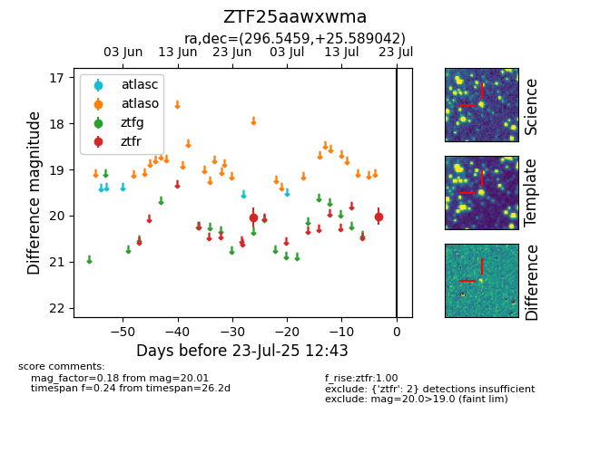

Target ZTF25aawxwma at 2025-07-23 12:43, see:
FINK: fink-portal.org/ZTF25aawxwma
Lasair: lasair-ztf.lsst.ac.uk/objects/ZTF25aawxwma
ALeRCE: alerce.online/object/ZTF25aawxwma
alt names
ZTF25aawxwma (ztf,fink)
coordinates:
equatorial (ra, dec) = (296.5459,+25.58904)
galactic (l, b) = (61.7295,+0.40233)
photometry
last ztfr=20.01
2 ztfr detections
